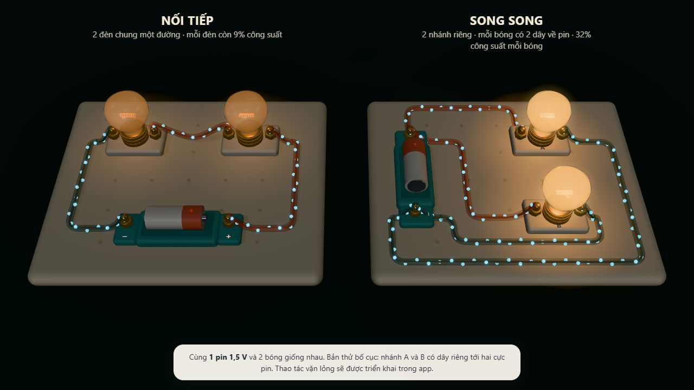

Thắp đèn đầu tiên
Nối sợi dây còn thiếu. Dây tóc ấm lên, ánh sáng soi ra góc bàn và những món đồ đang chờ được thử.
Một sợi dây khép mạch. Một bóng đèn bừng lên. Từ điều vừa làm được, bé bắt đầu hiểu thế giới điện bên trong.

Mỗi bóng tự nối về cả hai cực pin. Không nối chuyền từ bóng A qua bóng B, nên mắt có thể lần theo từng nhánh. Mẫu này đã sửa theo góp ý về độ rõ.
Ba khoảnh khắc nối tiếp trên chính mạch bé vừa lắp. Giữ nguyên công tắc, dây nối và kết quả điện khi đổi cách nhìn.
Nối sợi dây còn thiếu. Dây tóc ấm lên, ánh sáng soi ra góc bàn và những món đồ đang chờ được thử.
Vỏ đồ chơi mờ dần, kí hiệu hiện đúng chỗ. Bé nhận ra sơ đồ chính là món đồ vừa cầm trong tay.
Đi qua vỏ nhựa đến lõi đồng. Bật công tắc và nhận ra electron trôi có hướng trong mạng tinh thể.
Chi tiết làm nên sự rõ ràng: chọn bóng A sẽ làm nổi toàn bộ nhánh A. Vặn lỏng A, bé kiểm tra bóng B còn sáng. Đây là hành vi phải triển khai và nghiệm thu, chưa có trong cảnh mẫu.
Đưa thí nghiệm dẫn điện và cảnh an toàn lên trước bài học cần chúng. Mỗi đợt có thể chơi trọn, lưu được và kiểm chứng được.
Ba phụ lục khóa những điều không thể đoán bằng mắt: tính đúng điện, học được gì và dữ liệu thuộc về ai.
Thông số điện, chiều dòng, hội tụ, nhiệt và sự kiện hỏng. Hiệu ứng lấy từ kết quả tính toán.
Đọc đặc tả engine ↗ 02 / Nội dung13 bài · 16 vật mẫu · 12 nhiệm vụ · 12 ca sửa mạch. Có nguồn, lời dẫn và điều kiện chấm.
Đọc đặc tả nội dung ↗ 03 / Tương tácHai cách nối dây, màn dọc, bàn phím, dữ liệu cũ, sao theo hồ sơ và SVG khi thiếu WebGL.
Đọc đặc tả tương tác ↗Ca kiểm số điện cơ bản của bản thử đã qua với công thức đối chiếu độc lập, gồm hai bố cục ba dây nối tiếp và bốn dây song song. Đây chưa phải chứng nhận engine production; kiểm thời gian, hội tụ, lưu trữ và thiết bị vẫn là cổng nghiệm thu khi triển khai.